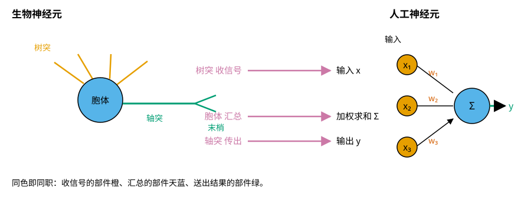
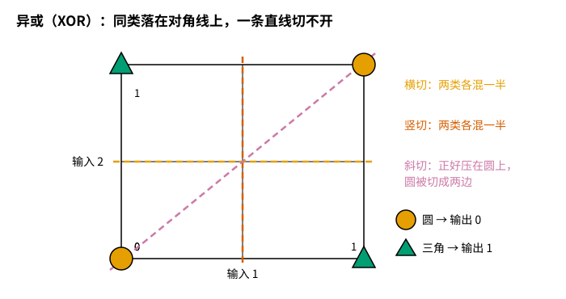
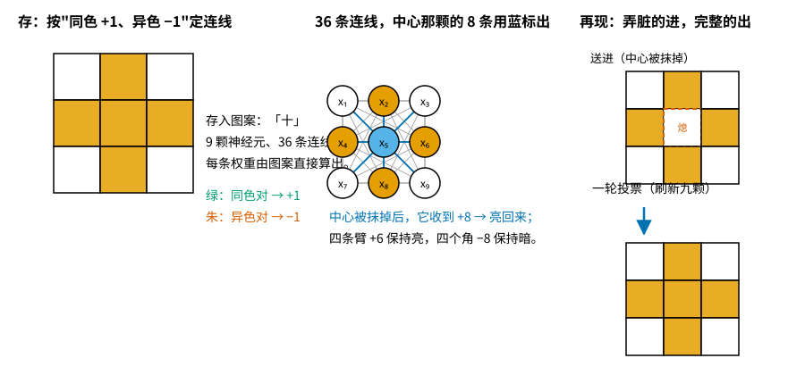

1.3.1 从神经元开始
从神经元开始¶
一句话直觉¶
人脑里大约有八百六十亿个神经细胞[6]，每个细胞只会做一件极其简单的事：接收信号，信号够强就往外传。没有任何一个细胞"懂得"下棋或认字，但它们连在一起时，这些能力就出现了。人工神经元把这件简单的事原样抄下来——于是"智能"这样复杂的东西，第一次有了一个可以计算的零件。
这一节只回答一个问题：一组只会做加减法和比较的零件，凭什么能产生有用的效果。
一个你每天都在用的类比¶
想一门课的及格判定：总评 = 平时分 × 30% + 期末分 × 70%，满 60 分算过。
这个规则里已经有了一颗人工神经元的全部零件：两个输入（平时分、期末分）、两个权重（30%、70%）、一步加权求和、一个阈值（60）、一个输出（及格为 1，不及格为 0）。你不是靠背"哪些学生及格"来判定及格的——你定好权重和阈值，任何一个新学生的成绩送进来，答案自动出来。
感知机（perceptron）做的事一模一样，只是权重不由人定，而是从数据里调出来。

同色的部件功能相同：树突收信号，胞体整合信号，轴突送信号；在人工神经元里，这三件事分别叫输入、加权求和与输出。注意对应是功能上的，不是解剖上的：它只借走了"收、汇、传"这三件事的分工。
它解决什么问题¶
1943 年，McCulloch 和 Pitts 证明了一件当时看来不可能的事：一个只做"加权、求和、阈值判断"的逻辑单元，串起来之后能表达任何命题逻辑[7]。这给了"思维可以被计算"这个想法一个具体的立足点。
1958 年，Rosenblatt 在此之上加了一样东西：权重不是设计出来的，而是从样例里调出来的[8]。这个改动比听起来大得多。在它之前，要让机器完成一个判断任务，人必须把判断规则一条条写全——这是符号主义的路数，第 1.2 节里说过它的难处。感知机把"完成任务"变成了"调参数"：规则从人手里转移到了数据手里。
所以这一节里，"学习"一词还没有出场，但它的舞台已经搭好了：只要存在一种自动调权重的办法，判断能力就可以从经验中生长出来。那个办法叫梯度下降，在第 1.3.3 节才登场。

一颗神经元能干什么，不能干什么¶
给 上图 的两个输入各取 0 或 1，这颗神经元能实现的判断有一个共同的几何形状：在平面上画一条直线，直线的一侧输出 1，另一侧输出 0。这不是比喻——加权和恰好就是直线的方程。权重决定直线的方向，阈值决定它离原点远近。
直线能分开的问题，单层感知机都能做。直线分不开的问题，它一个都做不了。最著名的反例是异或（XOR）：相同输出 0，不同输出 1。把四个点画在平面上（下图），两个同类永远落在对角线上，任何一条直线都必然把某个同类切到另一边去。

圆在 (0,0) 和 (1,1)，三角在 (0,1) 和 (1,0)：两类各占一条对角线。三条候选切法里，横切、竖切把两类各混一半，斜切勉强留下一个三角、却把其余三个全挤到另一侧——没有一条能幸免。
1969 年，Minsky 和 Papert 在《Perceptrons》里把这一点论证得足够彻底[9]，加上当时没有人知道怎么越过这道墙，感知机研究停顿了将近二十年。回头看，这堵墙的越过方式简单得近乎轻佻：多放几颗神经元，把直线摞成折线。但"怎么让摞起来的神经元各自调好自己的权重"，直到反向传播出现才有了答案——那是第 1.3.3 节的内容。
在此先记住一个判断标准，它后面会反复用到：评价一个模型，先问它画得出的边界是什么形状。边界形状决定了它天生能做什么任务，这是"天然优缺点"最早的来源。
一层互相连接的神经元，记住一个图案¶
前一颗神经元是"像素进来、答案出去"。现在换个摆法，把九颗神经元摆成 3×3，两两相连，不设输入层、输出层——每个像素的位置本身就是一颗神经元，它既是入口也是出口。
图案怎么存进连线？规则只有一句，在存图案的那一刻定死：图案里颜色相同的两颗，连线权重 +1；颜色不同的，-1。九颗神经元、36 条连线，权重全部由图案直接算出，不需要任何训练——"直接设定图案让它记忆"，字面意思。
记忆是这样工作的（下图）：给网络看一个缺了一块的图案，每颗神经元把所有同伴的当前颜色乘上连线权重、全部加起来，和为正就亮、为负就暗。这个动作同时发生在九颗神经元身上，算一轮，图案就刷新一次。

拿 上图 的右半边算一笔账：送进来的「十」中心被抹掉，其余八个像素都是对的。轮到中心那颗神经元表态时，它数一数 8 个同伴——存图案时与它同色的 4 颗，现在颜色正确，各贡献 +1；与它异色的 4 颗（四个角）现在也正确地暗着，异色配负权重，又各贡献 +1。合计 +8，中心亮回来。同时，四条臂各算出 +6，保持亮；四个角各算出 -8，保持暗——没人被带偏。一个像素的错误，一轮投票修复。
这类网络今天叫联想记忆（associative memory），Hopfield 在 1982 年证明了这种投票一定会停下来[10]。它是"一组神经元直接记住一个图案"的最简单例子：权重表就是记忆，再现就是投票。而它的天然短板也一眼可见：这套 36 个权重只认识「十」一个图案，想再存一个「X」，两组权重就会打架——存得多、记得糙，是所有记忆网络的共同税。
小结与自检¶
三句话总结：人工神经元 = 输入加权求和 + 阈值判断；单层感知机的判断边界是一条直线，所以它能做与不能做的事都由这个形状决定；一组神经元还能直接把图案存进连线权重、靠投票再现——权重表就是记忆，但一网只存得下一件事。
自检两题：
- 把 上图 里的阈值从 60 改成 90，判断边界发生了什么变化？
- 一个朋友说："神经元越多，单层感知机能解决的问题就越多。"这句话错在哪？
数学注解。 本节用到的全部数学，以下两行。记输入为 \(x_1, \dots, x_n\)，权重为 \(w_1, \dots, w_n\)，偏置为 \(b\)（就是 上图 里那个阈值的负数）：
加权和：
输出（阶跃激活）：
联想记忆的连线权重与刷新规则：存图案 \(s\) 时，\(w_{ij} = +1\) 若 \(s_i = s_j\)，否则 \(-1\)（\(w_{ii}=0\)）；再现时每颗神经元计算 \(h_i = \sum_{j \ne i} w_{ij}\, s_j\)，\(h_i \ge 0\) 则亮、\(< 0\) 则暗。
权重如何从数据里调出来（学习规则），统一放到第 1.3.3 节。